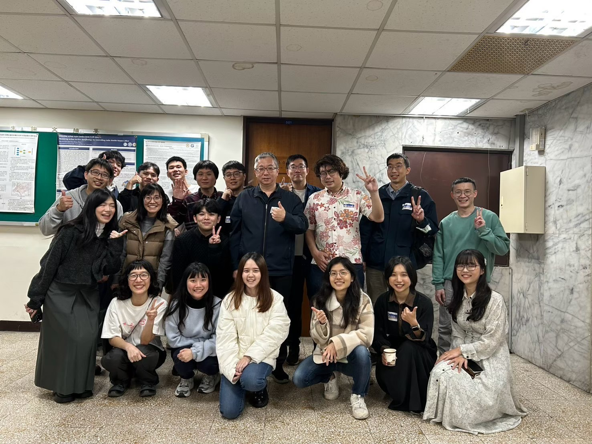
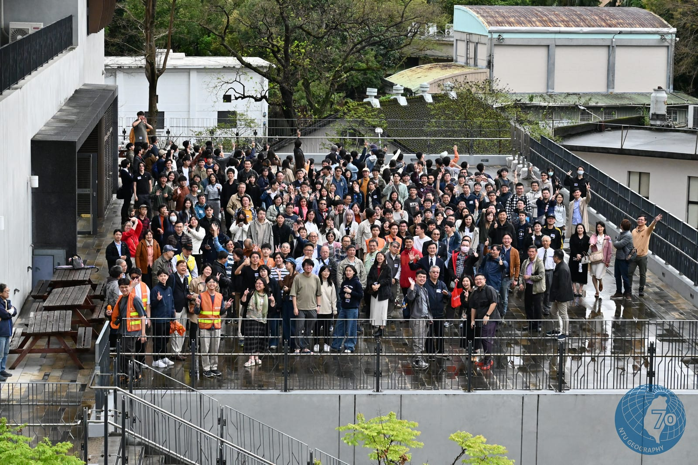
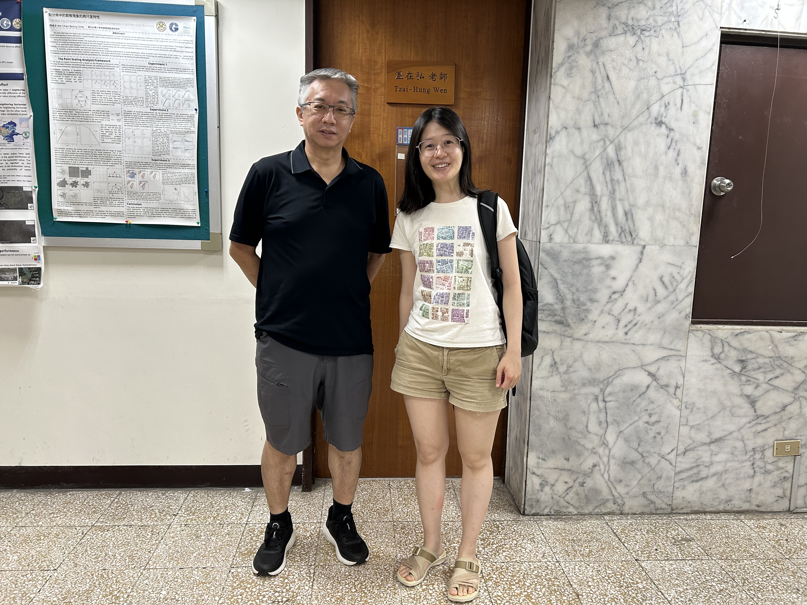

致力以地理資訊科學與空間統計方法，探索人類與環境的動態過程。
點擊論文標題可前往原文。
傳染病群聚偵測、擴散模型與流行病學空間方法。
醫療設施可近性、服務範圍與資源配置最佳化。
都市道路網絡結構分析、交通壅塞與人口流動研究。
空間統計、GIS 方法發展與地理資訊應用。



WenLab 是一個充滿活力的研究團隊，成員涵蓋博士生、碩士生與研究助理，共同投入空間分析、傳染病建模與公共衛生地理的前沿研究。